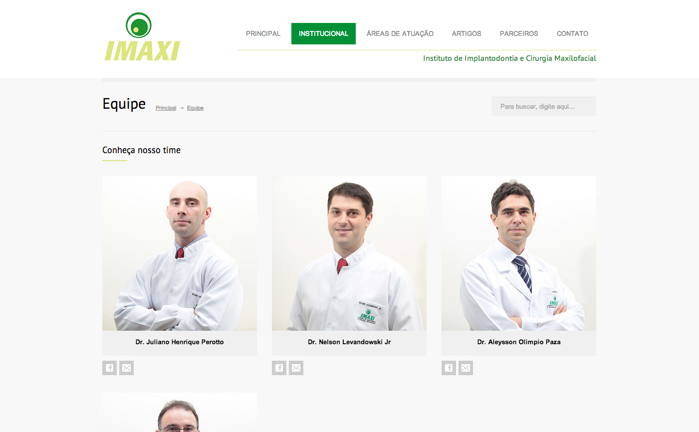

<div class="portfolio-single container">
		
    <div class="row">
    
        <div class="span8 portfolio-field portfolio-title">
            <h2>IMAXI Institute</h2>
        </div>

        <div class="span4 portfolio-field portfolio-nav">
            <a class="icon button back" href="#/portfolio">close</a>
        </div>

        <div class="span8 portfolio-field">
            
            
        </div>

        <div class="span4 portfolio-field">
            
            <h3>Description</h3>
            
            <p>A institutional site created for a odontological clinic. The client received a fully responsive site, that follows some SEO guidelines to position him at the top of search engines, which is one of the most important things for small companies in a very fierce market.</p>
            <p>I love work with small companies, they get really glad when they see the result. It is one of the top reasons why I like to deal with the final client cutting some agencies to go straight to the client.</p>
            
            <h3>Client</h3>
            
            <p><a href="http://www.institutoimaxi.com/" target="_blank">IMAXI Institute</a></p>
            
            <h3>Technology</h3>
            <ul class="tags">
                <li><a>HTML5/CSS3</a></li>
                <li><a>jQuery</a></li>
                <li><a>Responsive Design</a></li>
                <li><a>Wordpress</a></li>
            </ul>
            
            <div class="launch">
            	<a href="http://www.institutoimaxi.com/" target="_blank" class="btn">LAUNCH PROJECT</a>
            </div>
            
        </div>
        
    </div>    
</div>